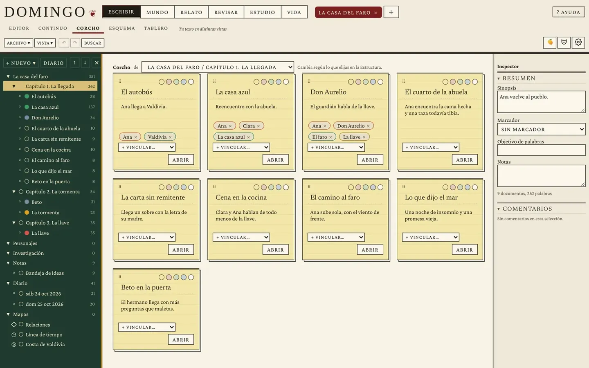
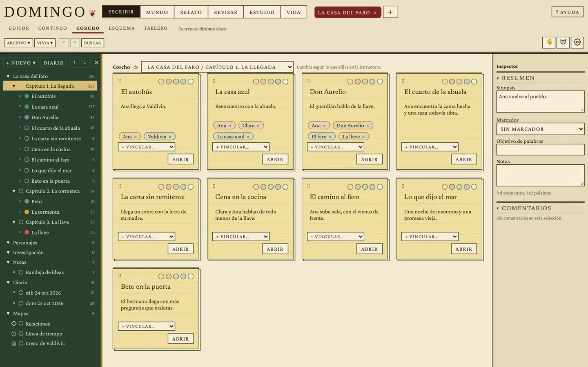
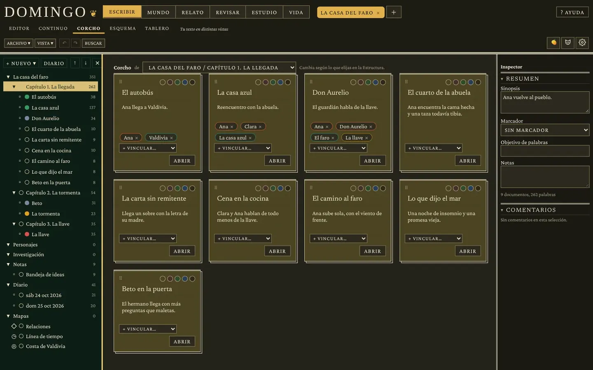

EstilosCapítulo ii
Elige cómo se ve tu estudio
Diez estilos, cada uno en tono claro, sepia y oscuro. Cambian la app completa, y varios se desbloquean con el uso, según los días que escribes y las palabras que juntas.

Estilo 01 de 10
Clásico
El aspecto de siempre
Desde el inicio
Pantalla
Tono
Tres tonos
De día, de tarde y de noche
Cada estilo tiene su versión clara, sepia y oscura. El tono se cambia en un clic desde Configuración y la app puede seguir el de tu sistema.



Y más
Tu letra, tu medida
Además del estilo eliges la tipografía del texto, el tamaño, el interlineado y el ancho de la columna. El corcho, los mapas y los marcadores usan los colores del estilo que elijas.